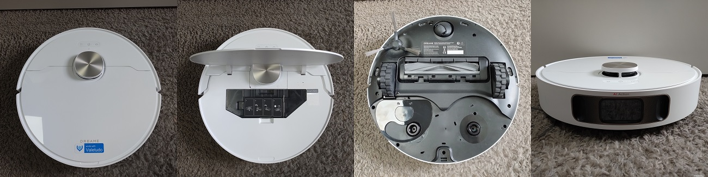

Dreame L10s Pro Ultra Heat
ACTIVE[2]
Do not update firmware via OTA if you plan to ever root your device

ModelID: dreame.vacuum.r2338a
Codename: p2338, r9302
SKU:
OEM: Dreame
Firmware format: enc(zip), signed, enc, sqfs(signed)
Sound format: tar.gz, unsigned
SOC: Allwinner MR813 (4x)
RAM: 1 GByte
Flash: 4GByte eMMC
MCU:
WiFi: RTL8189FTV
OS: OpenWRT (custom Tina) (4.9.x)
Released: Q1/2024
Features
LIDAR: y
Camera: y (1x OV8856 front facing [RGB,8MP), 1x SC031GS line laser [640x480])
Mop: y(rotating)
Waterpump: y (in basestation)
Towerbumper: y
IR dropsensors: 4x
IR sidesensors: y
Frontsensor: Camera, Linelaser
Carpetsensor: y (ultrasonic)
Brush type: rubber
Auto Empty: Yes (with default base station)
Auto Mop Cleaning: Yes (with default base station)
Cloud support: , dreame-iot
Rootability
Root supported? : y (Q1/2024)
Root method public? : y
Root complexity: easy
Valetudo support: y
Ressources
Custom Firmwarebuilder (Dustbuilder)
Rooting How-to
TÜV privacy certification: y
Buy on Amazon.com (affiliate link*)
Keepa.com price history for Amazon.com (ASIN:B0CVL2TT74):

Buy on Amazon.de (affiliate link*)
Keepa.com price history for Amazon.de (ASIN:B0CR4CY46X):

Buy on Amazon.fr (affiliate link*)
Keepa.com price history for Amazon.fr (ASIN:B0CR4CY46X):

Buy on Amazon.it (affiliate link*)
Keepa.com price history for Amazon.it (ASIN:B0CR4CY46X):

Buy on Amazon.es (affiliate link*)
Keepa.com price history for Amazon.es (ASIN:B0CR4CY46X):

Buy on Amazon.co.uk (affiliate link*)
Keepa.com price history for Amazon.co.uk (ASIN:B0CR4CY46X):

* We are Amazon affiliate partner and might get a provision. Please verify the exact device name and type before purchasing!
Comments
WARNING: The base station is voltage dependant only. Operation of the 110V base station in a region with 220V will make the auto empty fan explode!
Principle of rooting was released at DEFCON 31. Root possible without breaking warranty seals.
[1] DEFCON 31 Talk information: Vacuum robot security and privacy - prevent your robot from sucking your data
[2] DEFCON 31 recording on youtube
Firmwares
| Region | gl |
| first seen | 2023-11-30 |
| Type | MD5 | Filename | Version | Datetime | Size | Regions |
| app | 5b3305a60b4744231d1bc14d89270882 | 0c34cee95b3d6305ee85f9211305a4df20240414111808.img | 4.3.9_1527 | 2024-04-13 10:49:00 | 111,872 MB | gl |
Changelogs
These logs are extracted from official firmware releases. They might or might not contain useful information.
| Type | Version | Datetime | Changelog |
| app | 4.3.9_1527 | 2024-04-13 10:49:00 | |
[2] Active: A device is still sold, and receives support by the vendor or the community
You miss a device here and feel generous? Check out the Donations page here ;)
<-- Back to the overview
This information is collected over time by my rooted devices and stored in a database. There might be firmware older than this, but it is not listed here as I did not own a particular device at that time. There is no guarantee for accuracy of this information, as the availability of firmware might be device specific and region specific. Sometimes I don't have enough devices to cover all regions.
Note: If you use information from this table, please reference it, eg. "Dennis Giese, Robotinfo, https://robotinfo.dev".
Please contact me prior using any of the images.{kind=link}